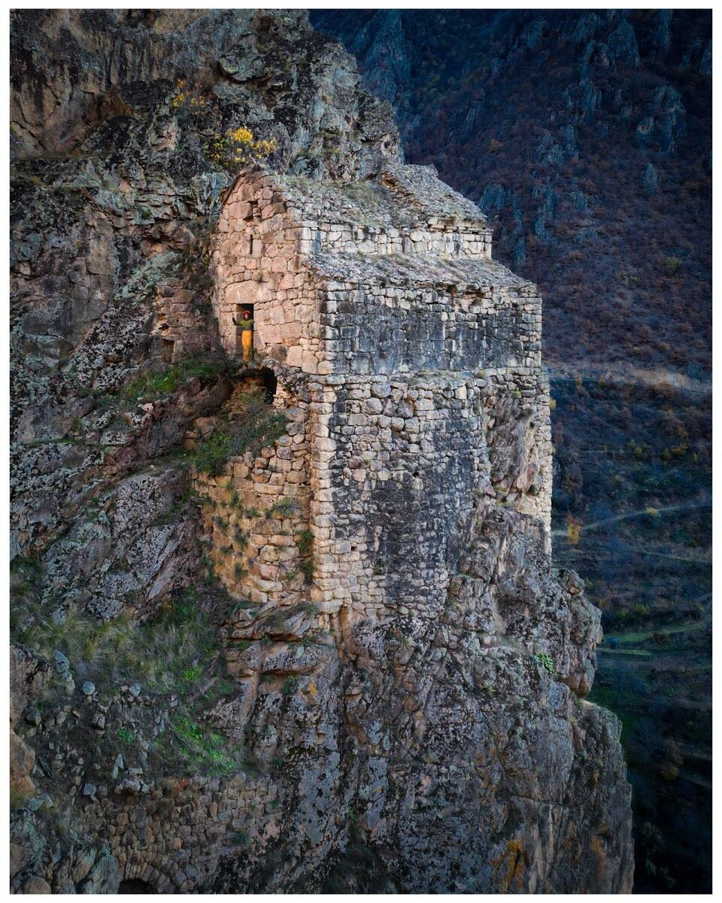

Expedition · Artvin, Türkiye
Nuka Sakdari
A ninth-century church on a ledge of rock that nobody has ever drawn. In October, three architects go up to draw it.

Tao-Klarjeti school
or site plans, ever
on foot only
October 2026
Standing, and running out of winters
High above a valley in the province of Artvin, in the far northeast of Türkiye, a two-naved basilica of the ninth century sits on a shelf of rock. It belongs to the Tao-Klarjeti school, the same constellation of medieval Georgian monasteries as Öşkvank, İşhan and Barhal. Unlike those, it has never been restored, has never been the object of a state programme, and is scarcely documented at all.
The stone roof has an opening. Water enters freely, vegetation is working at the masonry, and one wall needs urgent structural attention. Buildings of this construction fail slowly and then suddenly.
The entire record of eleven hundred years
This is not a building that is under-published. It is a building that has never been measured. There is no section, no elevation, no site plan of the complex, no Turkish rölöve, no academic thesis, and no digital record of any kind, in any language.
| Year | What exists |
|---|---|
| 1904 | Nikolai Marr's expedition reaches the site. A description and the first photographs, published 1911. |
| 1992 | Wachtang Djobadze, Early Medieval Georgian Monasteries in Historic Tao, Klarjet'i and Šavšet'i, Stuttgart. Two pages and plates. |
| 1994 | David Khoshtaria makes a hand survey. One ground plan. No sections, no elevations. |
A building held by a ledger
Restoration of Georgian churches in Türkiye has for years been entangled in reciprocity talks between Ankara and Tbilisi, church restorations counted against mosque restorations. That ledger has failed to balance for over a decade, and while it does, nobody touches anything.
We keep the project strictly outside that frame. A neutral European association raises the money, a Turkish heritage organisation acts as local partner, Georgian scholars participate academically and as observers, and any physical intervention is designed, approved and executed by Turkish experts under the authority of the Ministry of Culture and Tourism and its regional conservation council. We fund, we document, we advocate, we film. We do not touch the stone.
Sixteen days, three architects, one building
On 5 October we fly to Batumi, cross the land border at Sarp on foot and travel up into the valley. We stay two weeks, sleeping inside the building, and produce the first complete architectural record of it: measured drawings, condition mapping and a photogrammetric model. The material is delivered to the regional conservation council in Erzurum, as a gift and as an invitation.
We film all of it. The result is a short documentary, quiet and made of available light, whose single purpose is to raise the money to close the roof and consolidate the endangered wall in 2027.
Who goes
- Ekin ÖztürkArchitect, Türkiye. Institutional relations, the Turkish architectural context, documentation on site.
- Lorenz BühlerPhotographer, filmmaker and architect, Germany. Direction, camera and the edit.
- Tassilo de la TorreArchitect and photographer, Spain and Germany. Survey, stills, expedition lead.
Partners
The expedition is self-funded and runs lean. What we are looking for are partners who put their equipment on a building like this and let us show what it can do.
What we need. Cameras, lenses and filters that work in a near-black interior with one hole of bright sky in it. A sub-250-gram drone. Power, because there is none for eleven kilometres. Survey and photogrammetry tools. Drawing materials. Anything that has to survive two weeks of dust, stone and cold.
What you get. Your name in the credits of the film, a short brand cut of your own, and a selection of professional photographs of your product in real use, in one of the more extraordinary places in Europe, with the rights to use them.
If that sounds like something for you, write to tassilo@antiga.es or send a message to +34 608 635 863. Fifteen minutes on the phone is usually enough to know.
Previous work
Long journeys under my own power, and the writing that came out of them.
- The Danube, source to sea, 2,580 km from Ulm to the Black Sea in a seventy-year-old folding kayak.
- Befahrung des Tibers, the full report of a solo descent of the Tiber, 380 km from Sansepolcro to the sea.
- More writing and all journeys.
Nuka Sakdari, Artvin province, Türkiye. A proposal by a small group of European architects. Nothing on this page is a claim on the building: it is a registered Turkish cultural asset, and any work on it belongs to the Turkish authorities.